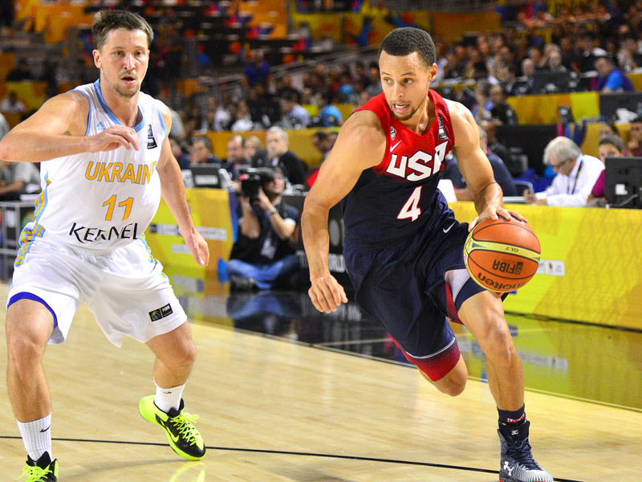

Dribbling
Dribbling is essential to basketball . It allows you to move around the court and separate yourself from a defender to find space for a shot. All good players are comfortable dribbling with both hands while not looking at the ball. It's not easy and takes a lot of practise. The best way to become a confident dribbler is to practice as much as possible. When practising you should be aiming to dribble with one hand without looking at the ball. The best way to practice this is by bouncing the ball low and hard. This repeated practise will build confidence and muscle memory to allow you to focus during a game.
